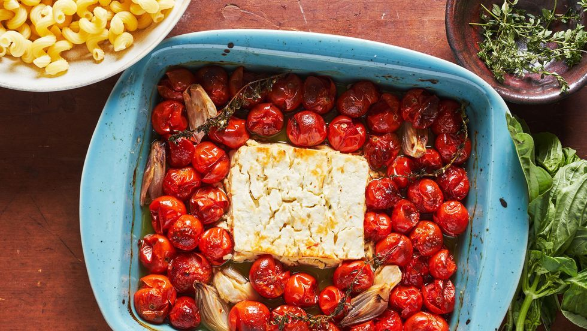

Receipe for Feta Cheese Pasta

Description
This is a easy way to make a quality pasta in oven.
Ingredients
- 600g Cheery Tomatoes
- Salt and peppers
- 2 Garlics
- Handful of basil
- 350g Penne Pasta
- 1 Cup of quality extra virgin olive oil
- 200g Feta Cheese
Steps
- Put washed cherry tomato on baking dish. Put olive oils, salt, peppers, and feta cheese.
- Put dish in the oven and cook it for 40 minutes at 350F.
- Put pasta in boiled water and cook it al dante.
- Put cooked pasta into baking dish. And put crushed garlic and fresh basil.